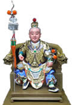
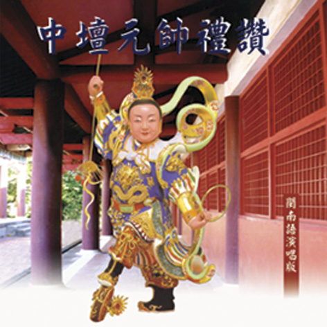

把守“ 密多院 ”的主帥護法神
九月初九中壇元帥千秋, 誰是中壇元帥？
中壇元帥，祂就是三太子李哪吒。 好好的來介紹一下這一位，在大家印象當中既可愛又可敬、既神通又濟世的太子爺！
Nalakuvara 是李哪吒的梵語名字，也有人稱為 Nalakubala；翻譯過來的意思就是哪吒天王、哪拏天、哪羅鳩婆、哪吒矩囉、哪羅鳩羅、哪吒鳩跋羅、哪吒俱伐羅。根據《大藏經．毘沙門天隨軍護法儀 軌》中所說：『爾時，哪吒太子，手持戟、以惡眼見四方...護持佛法，欲攝縛惡人。』，由這裏可以知道，哪吒三太子，最早是印度佛教中，護持佛法、守護國 界及國王的善神。
後來，到了唐朝，根據從印度密教典籍中，翻譯過來的說法，哪吒三太子是毘沙門天王，五個兒子當中的第三子。而所謂的毘 沙門天王，祂是一位護法及施福的神祇，哪吒跟隨在祂身邊，托塔相隨；而塔中所供奉的，就是釋迦牟尼佛的舍利。我們把這個記錄，跟大家所了解的民間故事相比 對，所謂的毘沙門天王，也就是佛教四大護法中，北方的護法神，托塔天王李靖。
故事一直演變到後來，在《西遊記》、《封神演義》等等的民 間小說裏，編纂出像：哪吒三太子跟東海龍王的殺子剝筋之仇、射殺石磯娘娘、削骨還父、削肉還母等等的故事情節，不斷將哪吒三太子的『人性』，加以多數的神 話與杜撰；慢慢的，哪吒三太子，就演變成道教所說的『中壇』主宰，也就是我們現所在尊稱的『中壇元帥』。
但是，中壇元帥這個名字，到底是怎麼來的呢？
所謂的『中壇』，其實只是一個職稱，就像是我們一般人說的總經理、協理、經理之類的。而在宗教中，『中壇』的位置，就在一般神桌中，下桌的中間，大家在放香 爐的位置。這個位置，是由太子爺加以護持；再加上，太子爺是玉皇大帝駕前的中營元帥，統率著東、西、南、北、中，五營的天兵神將，而所謂的「中營」就是中 國古代，元帥發號施令，調動兵力的地方，所以中營又被稱為 『中壇』。
哪吒本是玉皇駕下大羅仙，身長六丈，首帶金輪，三頭九眼八臂，口吐青雲，足踏盤石，手持法律，大噉一聲，雲降雨從，乾坤爍動。因世間多魔王，玉帝命令降 凡，故靈珠投胎于殷、周時代陳塘關總鎮托塔天王李靖，母素知夫人，李靖有三子，長子為金吒、次子為木吒、三子為哪吒。哪吒自幼即勇武有力，拜乾元山金光洞 太乙真人為師習法，俱隱身、土遁等法術。更有火尖槍、風火輪、靈符秘訣、混天綾、豹皮囊、乾坤圈、金磚等寶物，本領非凡。如詩傳：『手提紫焰蛇牙寶，腳踏 金霞風火輪，豹皮囊內安天下，紅錦綾中福世民』降世後，為姜尚中營神將，助周滅商，故後人都尊稱其為中壇元帥。
在 一般的民間宮廟裏，中壇，是供奉太子爺為中壇元帥，成為把守宮廟的主帥護法神。同時，還將太子爺，塑成童子像：身穿甲冑，右手上揚，拿著戰戟，左手橫胸， 握著乾坤圈；腳踩著風火輪，身纏混天綾，有如騰雲駕霧狀。身軀像七歲孩童，面貌豐圓，顯露出威嚴而又不失童氣的太子爺神像；用來表示太子爺的威風凜凜，法 力無邊。
在道教的說法中，一般寺廟中，均祀有五營神將；分為：東營九夷軍，張基清元帥，南營八蠻軍，蕭其明元帥；西營六戎軍，劉武秀元 帥；北營五狄軍，連忠宮元帥；中營三秦軍，李哪吒元帥，這五營神將，分掌境內五方。因此，只要是在道士施法時，會先在村落五方，豎立五方旗，然後由當地村 民，備妥牲醴犒祭，祭拜中營中壇元帥、土地、城隍、炳靈公等神明，接著誦經作法，驅邪壓煞！
中壇元帥李哪吒又稱「太子爺」、「太子元帥」、「哪吒元帥」、「哪吒太子」、「哪吒三太子」、「三太子爺」、「玉皇太子爺」等，或因其裝備之中有風火輪、乾坤圈、混天綾、豹皮囊等，又稱「李羅車」、「羅車公」、「大羅仙」、「羅車太子」、「金環元帥」等尊稱
一個眉目清秀、遍體紅光、肚子圍著一塊紅綾，右臂環著一個乾坤圈；同時，嬰兒的左手掌上有個哪字，右手掌上有個吒字。李靖自己知道，妻子生了個了不起的小孩，於是，順著祂出生時，手掌顯現的字，取名為哪吒。哪吒才出生不久， 就被太乙真人，帶回山洞教習武藝。
哪 吒，拜師乾元山，金光後洞，太乙真人為師。哪吒，天生悟性就高，短時間之內就把隱身法、土遁術等等法術，一下子就通通都學會了。太乙真人看見這樣的情況， 接著就把火尖槍、風火輪、靈符秘訣、混天綾、豹皮囊、乾坤圈、金磚等等寶物與法術，全部傳授給哪吒。也是因為這樣，哪吒年紀雖小，但在祂天賦秉異之下，擁 有著勇武絕倫的身手，以及高強的法力。
後來，到哪吒七歲的時候，有一天，天氣非常的炎熱，哪吒為了消暑，就帶著混天綾到九灣河洗澡，混 天綾映紅了整個河水；祂在水裏玩得非常開心，祂腳踏水晶殿，直衝進寶塔宮，哪吒身上的混天綾，在東海裏一飄，讓東海龍宮，整個像超級大地震一樣的震動了起 來。龍宮裏的人，個個是驚慌失措，不知該如何是好東海龍王敖光，馬上派海夜叉李良查看，李良向哪吒喊叫，要哪吒不要搗亂水晶宮，哪吒以為是妖怪，馬上拿了 乾坤圈，朝李良丟去，當場把李良給打死了。敖光接著派出，第三個太子敖丙，領了一隊兵，去像哪吒討公道，結果敖丙法力太低，被哪吒的乾坤圈打出原形，躺在 地上。哪吒順勢把小龍的筋抽出來，準備送給爸爸李靖，當作一條龍筋皮帶。
東 海龍王知道兒子被殺後，悲憤異常，馬上就去找李靖理論。李靖一聽這還了得，馬上出門尋找哪吒，不一會兒，李靖找到了哪吒，哪吒還開心的，把手上正在把玩的 龍筋皮帶，獻給李靖。李靖見狀大怒，立刻帶著哪吒，去向東海龍王請罪，同時也把龍筋還給龍王。敖光一看到敖丙的龍筋，一時悲從中來，跟李靖說：「敖丙是管 興雲佈雨的正神，怎麼可以隨便打死？」，說完後，就把李靖父子倆趕出龍宮。
敖 光第二天，就跑到天宮裏去，向玉帝告狀。哪吒知道敖光去告狀，立刻趕到南天門，去攔住敖光，大鬧一頓。哪吒心想，敖光不敢亂來，便安心的回到陳塘關，路上 無意中於上帝壇，手裏把玩著乾坤弓箭，突然，乾坤箭一發，不小心射死了石磯娘娘之子；石磯娘娘聞訊大怒，出兵要攻打陳塘關，哪吒為了怕事情擴大，傷及無 辜，一個人就拿起父親李靖的降魔杵，跟石磯娘娘展開大戰，哪吒技高一籌，當場就把石磯娘娘給殺了。
另一方面，東海龍王敖光，其實，早就奉了玉帝之命，召集四海龍王敖光、敖順、敖明、敖朋來抓拿李靖夫婦和哪吒。
這 個時候的陳塘關，一方面，有四海龍王前來抓人；另一方面，李靖又擔心被哪吒殺死的石磯娘娘，她是諸魔的領袖，她一死，一定會招惹鬼兵群攻。身為陳塘關總兵 的李靖，為了陳塘關的安危，以及天下百姓的福祉，憂心不已。再加上，是自己兒子哪吒闖的禍，李靖又不忍心，將自己的兒子抓來斬首謝罪。面臨這樣三方交相賊 的李靖，面對即將發生的大混戰，李靖真是不知該如何是好。整個陳塘關的官兵和百姓，個個都是愁眉不展，心懷憂懼。
把這一切都看在眼裡的哪吒，心裡知道自己闖下了大禍，而這個禍絕非道歉，就可以了事的，於是哪吒就到師父太乙真人的前面，向太乙真人詢問解決之道。
太乙真人看著哪吒，心裡著實不忍祂接著說：「你犯了這種滔天大罪，只有自殺，別無他策。」
哪吒聽完師父的話，心想：千萬不可拖累自己的雙親、兄弟、所有的軍民。
哪吒思考良久，於是，就自書遺言：「死在金帝殿，葬在太子山！」，接著祂就舉劍自殺，同時，祂還剖開自己的肚子，把腸、心臟、肺腑拉出來，還給母親素知夫人，削骨還給自己的父親李靖。如此一來，一場即將發生的大戰也因為哪吒的自盡，而煙消雲散。
哪 吒死後，哪吒的魂魄脫離了軀體，一路就飄到了乾元山，金光洞；太乙真人把哪吒的的靈魂攔下，同時叫金霞童子，到玉蓮池裏，採下蓮花兩朵，荷葉三片，拿回洞 裏。接著，太乙真人把蓮梗拆下組成三百個骨節，然後，在三片荷葉，分成上、中、下三塊，放在骨節上；太乙真人就在金光洞中，抓住哪吒的魂，往荷葉裡一推， 喊一聲：「哪吒快成人形！」，一下子，哪吒就以蓮花化身重生，活了起來。
太乙真人教哪吒法輪密旨，從此之後，只要哪吒喝叫一聲，就天頹 地塌；呵一個氣，就會有一層金光罩體；蹬一下，龍順虎從；鎗一撥，乾旋坤轉；混天綾丟起，山崩海裂；這讓哪吒的神通更加廣大！之後，太乙真人，命哪吒下 山，輔助周武王和姜子牙伐紂，完成伐紂大業。根據《封神榜》的說法，李靖被封為托塔天王，兄長金吒，被封為弘法護蓮菩薩，鎮守靈山維護法門清淨，二哥木吒 被封為惠岸尊者，哪吒被敕封為神兵、神將的統帥，佐善伐邪，鎮壓妖魔，是三十六員第一總領使，天帥之領袖，永鎮天門。

回 首頁 |